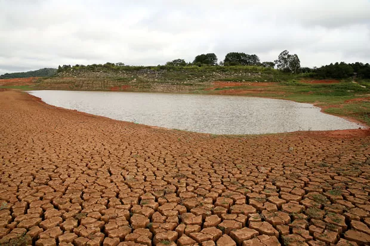
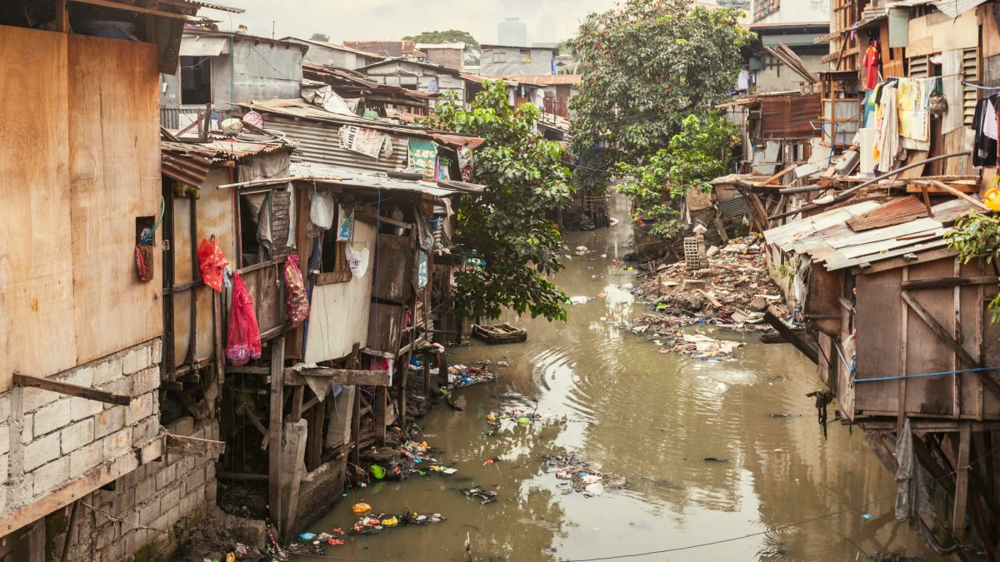

Infelizmente, na atual situação que estamos, muitos locais são afetados por causa de falta de conhecimento sobre a Sustentabilidade, isso ocorre em vários cantos brasileiros, sendo principal causa o campo, que diversas vezes tem suas oportunidades não sendo colhidas pela falta de atenção recebi pelo governo. Porém irei citar alguns lugares que são mais afetados nisso, sendo eles de pequena ou grande escala. Na atualidade, a Sustentabilidade tem sido alvo de muitas propagandas para melhorar nosso futuro, muito se fala do início para que haja sustentabilidade. Mas, caso alguma pessoa que não queira fazer isso, quais seriam os locais afetados? Separei uma lista indicando melhor cada local afetado!
Essa grande bola de neve pode ser formada principalmente pela falta de ensino sobre a Sustentabilidade, fazendo com que muitos locais urbanos sofram com impactos ambientais, como por exemplo a qualidade do ar, saúde e outros exemplos. Um principal exemplo sobre as zonas industriais, ou perímetro urbano são as ilhas de calor ou a inversão térmica! Infelizmente temos uma visão muito forte sobre como as zonas urbanas são centro de poluição sonoro, visual e respiratória. Essa mentalidade de qualidade não é mentira, entretanto poderíamos facilmente mudar esse futuro com a sustentabilidade.
Diversas áreas críticas ao redor do mundo são gravemente impactadas pela falta de práticas sustentáveis, sublinhando assim a necessidade urgente de medidas sustentáveis. Este resumo aborda os efeitos da falta de sustentabilidade na silvicultura.
As florestas tropicais, incluindo a Amazônia e a Bacia do Congo, estão sofrendo desmatamento impulsionado pela agricultura intensiva e pelo corte ilegal de madeira. Isso leva à perda de biodiversidade e à liberação de quantidades significativas de CO2, o que, por sua vez, influencia o clima global.
Ecossistemas marinhos, como as grandes barreiras de corais, estão em risco devido ao aquecimento global, acidificação dos oceanos e sobrepesca. A vida marinha é significativamente prejudicada pela poluição plástica, afetando a segurança alimentar e os meios de subsistência de milhões de pessoas.
As grandes cidades enfrentam problemas como a poluição do ar e a má gestão de resíduos sólidos. Questões de saúde pública e degradação ambiental são comuns, exigindo alternativas sustentáveis como sistemas eficientes de transporte público e esquemas de reciclagem.
A degradação do solo torna-se catastrófica em lugares como o Nordeste brasileiro, onde a agricultura insustentável sem manejo adequado causa erosão e desertificação. Isso ameaça a segurança alimentar, destacando a necessidade de práticas agrícolas sustentáveis que garantam a produtividade a longo prazo.